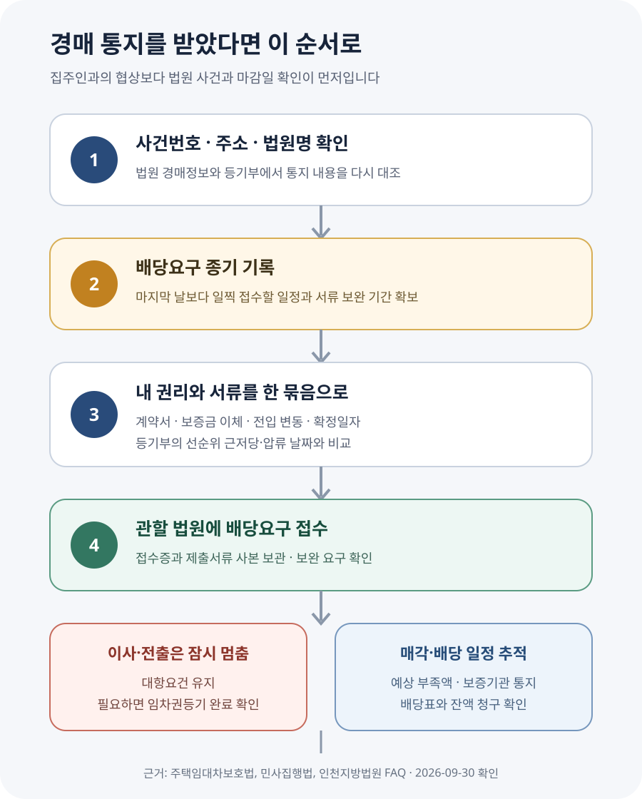

전셋집이 경매로 넘어갔다는 통지를 받으면 무엇부터 해야 할까?
전셋집이 경매에 넘어갔다는 우편이나 현황조사 연락을 받았다면, 집주인과 통화하는 것보다 먼저 관할 법원의 사건번호와 배당요구 종기를 확인하세요. 확정일자를 받은 일반 임차인과 소액임차인도 원칙적으로 정해진 종기까지 배당요구를 해야 매각대금에서 우선변제를 받을 수 있습니다. 임대차계약서·주민등록표 등·초본·확정일자 자료를 준비해 신청하고, 배당요구 종기 전에 이사하거나 전출하지 마세요. 이사가 불가피하면 임대차 종료 여부와 임차권등기의 실제 완료를 확인한 뒤 움직여야 합니다.
우편봉투보다 사건번호와 날짜를 먼저 적어 두세요
경매개시결정은 집이 곧바로 다른 사람에게 넘어갔다는 뜻이 아닙니다. 채권자의 신청을 받은 법원이 해당 부동산을 매각하는 절차를 시작했다는 뜻입니다. 이후 현황조사, 감정평가, 매각기일, 매각허가, 대금 납부와 배당이 이어집니다. 세입자가 해야 할 일은 이 과정에서 자신의 임대차와 보증금 채권을 법원에 정확히 알리는 것입니다.
먼저 통지서에 적힌 법원명, 사건번호, 배당요구 종기를 따로 적습니다. 주소와 동·호수가 내가 사는 집과 같은지도 확인합니다. 통지서가 의심스럽다면 적힌 전화번호로 바로 연락하지 말고 대한민국 법원 경매정보나 해당 법원 대표번호를 통해 사건을 다시 확인하세요. 사건번호를 모르면 최신 등기사항증명서의 경매개시결정 등기에서 관할 법원과 접수 정보를 찾을 수 있습니다.
집행관이 현황조사를 위해 방문하거나 연락할 수 있습니다. 이때 임대차계약일, 보증금, 월세, 전입일, 확정일자, 실제 점유 상황을 사실대로 확인하되, 현황조사에 임대차가 기재됐다는 이유로 배당요구까지 자동으로 끝났다고 생각하면 안 됩니다. 법원 안내도 확정일자를 갖춘 임차인이 별도로 배당요구를 해야 한다고 설명합니다.
전입신고만 했는지, 확정일자까지 받았는지 나눠 봅니다
주택임대차보호법 제3조에 따른 대항력은 세입자가 주택을 인도받아 실제로 점유하고 주민등록을 마치면 그 다음 날부터 생깁니다. 대항력은 집주인이 바뀌어도 임대차 관계를 주장할 수 있는 힘입니다. 하지만 대항력이 있다고 해서 경매대금에서 자동으로 먼저 돈을 받는 것은 아닙니다.
같은 법 제3조의2는 대항요건과 임대차계약증서의 확정일자를 갖춘 임차인이 경매·공매 때 후순위 권리자와 다른 채권자보다 우선해 보증금을 변제받을 수 있도록 합니다. 이것이 우선변제권입니다. 실제 순위는 대항력 발생일, 확정일자, 근저당권·압류 등 다른 권리의 설정일을 함께 비교해야 합니다.
| 내 상태 | 의미 | 지금 확인할 일 |
|---|---|---|
| 점유 + 전입신고 | 대항력 성립 가능 | 전입일과 실제 점유가 끊긴 적이 있는지 확인 |
| 점유 + 전입신고 + 확정일자 | 우선변제권 성립 가능 | 각 날짜와 선순위 권리, 배당요구 종기 확인 |
| 소액임차인 요건 해당 가능 | 일정 요건에서 최우선변제 검토 | 지역·담보권 설정 시점별 기준과 보증금 확인 |
| 전출했거나 집을 비움 | 대항요건 상실 위험 | 임차권등기 완료 여부와 전출·퇴거 날짜 확인 |
소액임차인 기준은 현재 보증금만 보고 정하지 않습니다. 주택 소재지와 선순위 담보권이 설정된 시점에 적용되는 법령을 확인해야 합니다. 인터넷의 최신 금액표만 보고 내 계약에 그대로 대입하지 말고 관할 법원이나 법률 전문가에게 등기부와 계약서를 함께 보여 주세요.
확정일자가 있어도 배당요구 종기를 넘기면 안 됩니다
민사집행법 제84조에 따라 법원은 첫 매각기일 이전으로 배당요구 종기를 정해 공고합니다. 제88조는 배당요구를 할 수 있는 채권자의 절차를 정합니다. 인천지방법원은 확정일자를 갖춘 임차인과 소액임차인 모두 배당요구 종기까지 신청해야 우선변제를 받을 수 있다고 안내합니다.
따라서 “확정일자가 있으니 법원이 알아서 챙기겠지”라고 기다리면 안 됩니다. 종기는 단순 상담 예약일이 아니라 법원에 신청이 접수돼야 하는 마감일입니다. 서류 보완이 생길 수 있으므로 마지막 날보다 일찍 담당 민사집행과에 제출하고, 접수증이나 접수 사실을 보관하세요.
일부 예외는 있습니다. 예를 들어 임차권등기가 첫 경매개시결정등기 전에 완료된 임차인처럼 별도 배당요구 없이 배당받을 수 있다고 본 판례가 있습니다. 그러나 자신이 예외에 해당한다고 스스로 단정하기 어렵고, 배당요구 여부가 보증금 회수와 낙찰자의 인수 범위에 영향을 줄 수 있습니다. 일반 세입자라면 사건 기록과 등기부를 가지고 담당 법원에 제출 필요 여부를 확인하는 것이 안전합니다.

배당요구 신청에는 어떤 서류가 필요할까요?
관할 법원과 사건에 따라 서식과 제출방법이 다를 수 있으므로 먼저 담당 민사집행과에 확인해야 합니다. 인천지방법원 FAQ는 주택임차인의 배당요구 때 다음 자료를 안내합니다.
- 임대차계약서 사본 — 확정일자 표시가 있거나 확정일자 부여현황 등 이를 소명할 자료를 준비합니다.
- 주민등록표 등본·초본 — 주소변동 사항이 포함된 최근 발급본을 준비합니다. 법원 안내는 1개월 이내 발급본을 제시합니다.
- 임차 부분을 특정하는 자료 — 다가구주택처럼 등기상 독립된 호실이 아닌 경우 층·호수와 사용 부분을 표시한 배치도가 필요할 수 있습니다.
- 보증금 잔액 계산 자료 — 월세를 냈거나 연체 차임이 있다면 이체내역과 공제 후 남은 보증금 계산서를 준비합니다.
여기에 경매 통지서, 신분증, 최신 등기사항증명서, 보증금 송금내역, 계약 갱신서와 증액 계약서가 있다면 함께 정리해 두는 편이 좋습니다. 계약을 갱신하면서 보증금을 올렸다면 원래 보증금과 증액분의 확정일자·순위가 다를 수 있으므로 계약서들을 한꺼번에 제출해 확인받으세요.
보증금 3억원 전셋집이 경매에 들어간 사례
세입자 A가 보증금 3억원에 입주하면서 전입신고와 확정일자를 받았다고 가정하겠습니다. 계약 당시 등기부에는 A의 대항력 발생일보다 앞선 은행 근저당권이 있었고, 1년 뒤 집주인의 채무 문제로 경매가 시작됐습니다. A는 법원 우편에서 사건번호와 두 달 뒤의 배당요구 종기를 확인했습니다.
A가 가장 먼저 할 일은 집값과 보증금만 비교하는 것이 아닙니다. 계약 당시와 현재의 등기부를 나란히 놓고 은행 근저당권 설정일, A의 전입일·점유 시작일, 확정일자, 뒤에 생긴 압류·가압류의 날짜를 표로 정리해야 합니다. 그다음 계약서와 주소변동이 포함된 주민등록표 초본을 준비해 종기 전에 배당요구를 접수합니다.
감정가가 4억원이라고 해서 3억원을 모두 받을 수 있다고 단정할 수도 없습니다. 실제 매각가격은 달라질 수 있고, 집행비용과 선순위 권리자의 배당액, 소액임차인 최우선변제 여부 등에 따라 A에게 돌아오는 금액이 달라집니다. 채권최고액은 실제 배당액과 같지 않으므로 금융기관 채권액도 사건 기록에서 확인해야 합니다.
예상 매각대금 3억6천만원에서 집행비용과 선순위 채권 1억5천만원을 빼면 단순 잔액은 2억1천만원입니다. 그러나 실제 배당표에는 다른 우선권과 정확한 채권액이 반영되므로 이 계산만으로 회수액을 확정하면 안 됩니다. 부족 가능성을 일찍 파악해 보증기관·임대인에 대한 별도 청구와 법률상담을 준비하는 용도입니다.
새집 계약 때문에 이사해야 해도 먼저 전출하면 안 됩니다
법원 안내는 배당요구를 했더라도 임차권등기 없이 배당요구 종기 전에 이사하거나 주민등록을 옮겨 대항요건을 잃으면 우선변제를 받을 수 없다고 설명합니다. 종기가 연기되면 연기된 날까지 대항요건을 유지해야 합니다. 짐 일부를 두는 식의 형식적인 점유가 인정될 것이라고 기대하지 말고 실제 주거와 주민등록을 함께 관리하세요.
임대차가 끝났고 보증금을 받지 못한 채 이사해야 한다면 주택임대차보호법 제3조의3의 임차권등기명령을 검토할 수 있습니다. 중요한 것은 신청서 제출이나 결정문 수령만이 아니라 등기부에 임차권등기가 실제로 기재된 것을 확인한 뒤 이사와 전출을 진행하는 것입니다. 이미 경매가 시작된 경우에는 배당요구와 임차권등기의 관계를 담당 법원에 함께 확인하세요.
계약기간이 아직 남았거나 임대차 종료 통지가 적법하게 이뤄지지 않았다면 임차권등기명령 요건부터 달라질 수 있습니다. 새집 일정 때문에 현재 집을 먼저 비우기 전에 계약 종료일, 해지·갱신 통지, 경매 진행 단계와 보증기관의 요구사항을 한꺼번에 점검해야 합니다.
배당으로 보증금 전액을 못 받는다면 끝인가요?
배당액이 보증금보다 적다고 남은 채권이 자동으로 사라지는 것은 아닙니다. 임대인에 대한 보증금반환채권의 잔액, 보증보험·보증 가입 여부, 전세사기피해자 지원 대상 여부를 따로 확인해야 합니다. 다만 배당을 받고 임차주택을 인도하는 과정, 낙찰자에게 주장할 수 있는 권리와 부족분 청구는 선순위·후순위와 배당요구 선택에 따라 달라질 수 있습니다.
전세보증에 가입했다면 경매 통지를 받은 즉시 보증기관에 사고 통지 시점과 제출서류를 문의하세요. 임의로 이사하거나 배당요구를 누락하면 보증 이행 절차에도 영향을 줄 수 있습니다. 전세사기 정황이 있거나 다수 세입자가 얽힌 다가구주택이라면 전세피해지원센터, 대한법률구조공단 또는 변호사에게 사건번호와 전체 서류를 제시해 상담받는 편이 안전합니다.
배당표가 작성된 뒤 내 순위나 금액이 잘못됐다고 생각해도 당일 처음 문제를 파악하면 대응 시간이 부족합니다. 매각기일과 배당기일을 계속 확인하고, 법원이 요구한 신고·증빙이 사건 기록에 제대로 들어갔는지 미리 확인하세요.
배당으로 보증금 일부를 받았다면 지급일·수령액·남은 원금을 한 장에 기록해 두세요. 임대인이 따로 갚은 돈이나 보증기관이 대신 지급한 돈까지 섞이면 남은 채권액을 잘못 계산하기 쉽습니다. 법원 배당금, 임대인 변제액, 보증기관 지급액을 날짜별로 나누고 통장 입금내역과 결정문을 함께 보관하면 이후 잔액 청구나 상담 때 설명하기 수월합니다. 같은 금액을 이중으로 청구할 수는 없으므로 실제 수령액을 반영한 잔액표가 필요합니다.
경매가 시작되면 월세와 계약기간은 어떻게 되나요?
아직 계약기간이 남았는데 월세를 계속 내야 하나요?
경매가 시작됐다는 사실만으로 임대차계약이 즉시 끝나거나 월세 지급의무가 자동으로 사라지는 것은 아닙니다. 계약이 존속하고 집을 사용하고 있다면 차임 문제를 별도로 봐야 합니다. 다만 누구에게 어떤 방식으로 지급해야 하는지, 채권압류나 법원의 명령이 있는지는 사건에 따라 달라질 수 있습니다. 집주인이 연락되지 않는다는 이유로 현금 보관만 하거나 임의로 보증금에서 빼지 말고, 통지서와 계약서를 가지고 법원 또는 전문가에게 지급방법을 확인하세요.
배당요구를 하면 계약을 해지하거나 즉시 집을 비운 것으로 보나요?
배당요구는 경매 매각대금에서 내 보증금 채권을 배당해 달라고 법원에 신고하는 절차입니다. 배당요구서를 냈다는 사실만으로 이사와 전출이 완료되는 것은 아닙니다. 오히려 우선변제를 받으려면 법원이 요구하는 시점까지 점유와 주민등록 등 대항요건을 유지해야 할 수 있으므로, 배당요구 접수와 퇴거 일정을 같은 일로 처리하면 안 됩니다.
법원 현황조사서에 내 이름이 있으면 신청하지 않아도 되나요?
현황조사보고서와 매각물건명세서는 집행관 조사와 법원이 파악한 점유·임대차 정보를 매수희망자에게 알리는 자료입니다. 내 이름과 보증금이 적혀 있어도 일반적인 확정일자부 임차인의 배당요구를 대신한다고 단정할 수 없습니다. 인천지방법원 안내처럼 종기까지 별도의 배당요구 신청을 하고, 사건 기록에 접수됐는지 확인하는 것이 원칙입니다.
집주인이 경매를 취하할 테니 배당요구를 하지 말라고 합니다
경매가 실제 취하·취소될지는 집주인의 말만으로 확정되지 않습니다. 채권자 동의나 채무 변제 등 필요한 조건이 갖춰지고 법원 기록에 절차 종료가 반영됐는지 확인해야 합니다. 종기가 다가오는데 구두 약속만 믿고 배당요구를 미루면, 경매가 계속됐을 때 기한을 되돌리기 어렵습니다. 취하 여부와 무관하게 현재 가능한 권리보전 조치를 담당 법원에 확인하세요.
다가구주택의 다른 세입자 보증금도 알아야 하나요?
다가구주택은 여러 세입자가 하나의 부동산 매각대금에서 배당받을 수 있어 다른 임차인의 전입·확정일자와 보증금도 내 회수액에 영향을 줄 수 있습니다. 등기부에 모든 임차보증금이 나타나는 것은 아닙니다. 법원의 현황조사보고서·매각물건명세서와 확정일자 부여현황 등 확인 가능한 자료를 살펴보고, 내 임차 부분을 특정할 배치도와 계약 자료를 빠짐없이 제출하세요.
경매 통지를 받은 날 확인할 것
- □ 통지서의 법원명·사건번호·주소·동호수가 맞는지 확인했다.
- □ 배당요구 종기를 달력과 휴대전화에 기록했다.
- □ 계약서, 갱신서, 확정일자 자료와 보증금 이체내역을 모았다.
- □ 주소변동 전체가 나오는 주민등록표 초본을 확인했다.
- □ 전입일·점유 시작일·확정일자와 등기부 권리 설정일을 비교했다.
- □ 관할 법원 민사집행과에 배당요구 방법과 제출서류를 확인했다.
- □ 접수 뒤 접수증과 제출서류 사본을 보관했다.
- □ 배당요구 종기 전 이사·전출 계획을 멈추고 임차권등기 필요성을 확인했다.
- □ 보증 가입 여부와 보증기관 사고 통지 절차를 확인했다.
- □ 매각기일·배당기일과 예상 부족액을 계속 점검할 일정을 잡았다.
공식 자료
- 국가법령정보센터 — 주택임대차보호법 제3조 (대항력)
- 국가법령정보센터 — 주택임대차보호법 제3조의2 (보증금의 회수)
- 국가법령정보센터 — 주택임대차보호법 제3조의3 (임차권등기명령)
- 국가법령정보센터 — 민사집행법 제84조 (배당요구의 종기결정 및 공고)
- 국가법령정보센터 — 민사집행법 제88조 (배당요구)
- 인천지방법원 — 전셋집 경매 시 임차인의 배당요구 안내
- 사법정책연구원 — 경매절차의 개선방안
- 대한민국 법원 경매정보
정보 기준일: 2026-09-30. 이 글은 일반적인 주택 임차인이 경매 통지를 받은 상황의 확인 순서를 설명합니다. 실제 권리와 배당액은 경매개시결정등기, 대항력 발생일, 확정일자, 임차권등기, 선순위 담보권, 조세채권, 점유 유지, 매각대금에 따라 달라집니다. 배당요구 취하, 이사·전출, 임차주택 인도 또는 법적 청구 전에는 관할 법원과 법률 전문가에게 개별 사건을 확인하세요.
경매 통지를 받았다면 같이 확인하세요
- 경매 입찰가 계산기예상 매각가격과 비용 구조를 참고
- 보증금 못 받을 때 — 임차권등기명령계약 종료 뒤 이사가 필요할 때의 절차